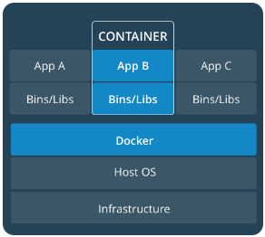
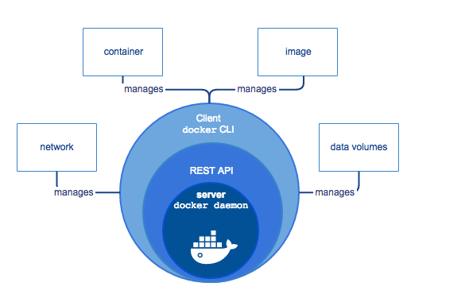
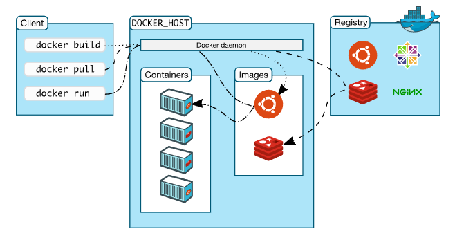

本文内容从docker官方文档摘抄，仅介绍基础概念，将与swarm相关的service、stack都没载入
Docker基础
基本概念
image 与 container
A container is launched by running an image. An image is an executable package that includes everything needed to run an application–the code, a runtime, libraries, environment variables, and configuration files.
容器就是跑镜像的，镜像包括了程序运行的所有资源,包括代码，运行时，lib，环境变量，配置文件等container 与 docker

容器跑在docker上，每个容器之间相互独立。docker运行在host os之上

基本操作
docker帮助
docker
docker COMMAND –help
docker container –helpdocker版本
docker –versiondocker的信息
docker info
列出docker的基本信息，包括Container状态，image个数等运行image
docker run hello-world列出image
docker image ls列出container
docker container ls # running
docker container ls –all # all
docker container ls -aq # all in quiet mode列出云节点[对于swarms]
docker node ls列出所有服务[对于swarms]
docker service ls查看某个服务具体信息[对于swarms]
docker service ps 服务id
containers
层级结构
Container(底层)
Services: 定义container的行为[defines how containers behave in production]
Stack: 定义service的相互作用[defines the interacions of all the services]Dockerfile
- 映射容器内的资源与容器外的，如端口，磁盘等
- 指明需要从外部环境中copy到容器的文件
创建一空目录，然后在里边创建一Dockerfile格式如下：
1 | # 引用一个官方的python镜像 Use an official Python runtime as a parent image |
app
在Dockerfile同级目录下创建2个文件，requirements.txt以及app.py.
其中requirements.txt是依赖包，而app.py可以拓展为应用代码
这样在Dockerfile被创建为image时，requirements.txt，以及app.py都会被copy到容器内部，由于ADD . /app命令，同时，也可以用80来访问了。
pip install -r requirements.txt只是为python安装了Flask与Redis库，redis本身并没有运行。requirements.txt #依赖包
1
2Flask
Redisapp.py
1
2
3
4
5
6
7
8
9
10
11
12
13
14
15
16
17
18
19
20
21
22
23
24from flask import Flask
from redis import Redis, RedisError
import os
import socket
# Connect to Redis
redis = Redis(host="redis", db=0, socket_connect_timeout=2, socket_timeout=2)
app = Flask(__name__)
@app.route("/")
def hello():
try:
visits = redis.incr("counter")
except RedisError:
visits = "<i>cannot connect to Redis, counter disabled</i>"
html = "<h3>Hello {name}!</h3>" \
"<b>Hostname:</b> {hostname}<br/>" \
"<b>Visits:</b> {visits}"
return html.format(name=os.getenv("NAME", "world"), hostname=socket.gethostname(), visits=visits)
if __name__ == "__main__":
app.run(host='0.0.0.0', port=80)构建app镜像
在同目录下执行：
docker build -t firendlshello查看镜像
docker image ls运行镜像
docker run -p 4000:80 friendlyhello
这样在外部需要用4000来访问，http://localhost:4000查看运行中的container
docker container ls停止container
docker container stop “CONTATINER ID”分享镜像[暂时略过]
类似于github，有个dockerhub，可以通过docker push 来上传镜像